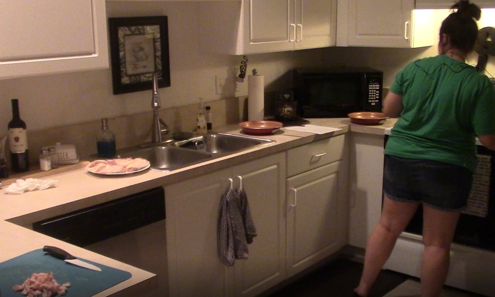
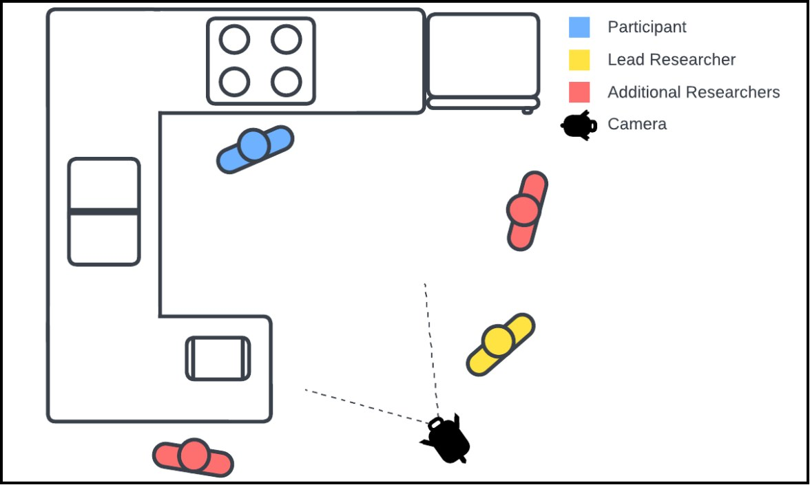

Task Guidance.
What people need when a recipe gets hard.
Before building guidance for complex tasks, we watched eight people cook an unfamiliar recipe in their own kitchens. Where they struggled became fifteen user needs that designers can use well beyond cooking.
Before designing guidance, watch where people get stuck.
Task guidance systems, from GPS to smart speakers to AR headsets, are meant to help people finish a procedure. But there were few general principles for designing them. This study asks what people actually need in the middle of a task, using cooking as the test bed: it is familiar, it can be done at home, and it demands planning, memory, multitasking and attention all at once.
I and my co-authors visited eight people in their own kitchens and observed them cooking an unfamiliar recipe. Careful analysis of what we saw produced 15 user needs in four themes: object interaction, knowledge base, safety and task coordination. The work was published at ACM DIS 2024.
- PARTICIPANTS
- 8Cooking in their own home kitchens
- USER NEEDS
- 15Grouped into four themes
- VENUE
- DIS 2024ACM Designing Interactive Systems, Copenhagen

Guidance is only useful if it fits the person.
Paper checklists and written instructions fail in familiar ways: people lose their place, skip steps after an interruption, or believe a task is finished when it is not. Technology can help, but what helps depends on the user, the context, how guidance is delivered and when feedback arrives. Existing guidelines were mostly tied to one domain, and rarely covered dangerous situations.
- Experts and novices differ. Too much information can hurt an expert (the expertise reversal effect), and too little hurts a novice.
- Prior needs were narrow. They focused on a particular activity or on technical features.
- Cooking was understudied for this. Human-food interaction offered pieces, but no comprehensive set of needs for guidance.
Goal: build a set of user needs that designers can use for task guidance in cooking, and beyond it.
A contextual inquiry in real kitchens.
Contextual inquiry means observing people doing real work in their own setting. Participants cooked coq au vin from a paper recipe, using their own kitchens, appliances and utensils. A professional chef helped design the recipe so it had parallel tasks, unfamiliar techniques (such as blanching pearl onions and cutting carrots on a bias) and above-average complexity. That complexity was deliberate: it makes the moments where guidance could help easier to see.
- Recording. One camera on the participant and the room, plus audio recorders on the lead researcher and participant.
- Think-aloud. Participants narrated their thinking, and the researchers asked about specific choices, such as why a particular spatula was picked.
- Light touch. One lead researcher and two others kept a discreet distance and only stepped in for safety or clarification. No music or TV was allowed, to hold attention.
- Length. About two hours including setup and a post-study questionnaire, with over 85% of it spent cooking.

Who took part
Eight adults (six women, two men) from the southeastern United States, aged 22 to 74 (mean 41.9). They rated their own cooking skill from 50 to 88 out of 100 (mean 64.9), so none saw themselves as beginners and none as complete experts. Only one had made coq au vin before.
From 828 sticky notes to 15 needs.
Our four researchers wrote observations from the videos and notes onto virtual sticky notes, then built affinity diagrams bottom-up, working together in video calls and separately in between. We checked groupings against the recordings, and let notes sit in more than one group to avoid over-generalizing. Fewer than 10% of notes did not fit.
- 828sticky notes
- 148clusters
- 33related clusters
- 15user needs
- 4themes
Four themes, fifteen needs.
Each need below came with concrete moments from the sessions. The strongest pattern was how often people left the recipe to look something up, ask someone, or improvise.
OBJECT INTERACTION
- 01Help when working with unfamiliar objects
- 02Help picking the right object quickly when there are several options
- 03Know what to use as a substitute if the needed tool is missing
KNOWLEDGE BASE
- 04Help finding objects in the working environment
- 05Help understanding the definition of terms in a task
- 06Help when performing tasks they are unfamiliar with
- 07Guidance when things don't go as planned
SAFETY
- 08Help handling tools
- 09Help determining whether food is properly cooked
- 10Help identifying and working with hot objects
- 11Guidance on food safety, cross-contamination and washing ingredients
TASK COORDINATION
- 12Advice on the ideal moment to prepare objects that must be ready ahead of time
- 13Be able to perform activities between tasks and multitask
- 14Be able to track time for different tasks
- 15Know what task they are on and what comes next
Moments that drove the needs.
Improvising a missing tool
Six of eight participants did not own a Dutch oven and used something else. One nearly put a pot with a plastic handle and lid into a hot oven before a researcher stepped in. Participants turned to Google to work out substitutes.
Terms nobody knew
All participants needed help with unfamiliar terms. None knew what beurre manié was or how to make it. One searched, found a video, tried to copy it, and ended up with a mixture that looked nothing like it.
A technique most people missed
All but one participant peeled pearl onions by hand rather than blanching them, which took far longer. The one who searched for a video was the exception.
Safety in small moments
One participant cut themselves peeling carrots, and another cut vegetables while holding them in their hand. Hot-pan handles were touched to test them, and people judged doneness by sound, smell or sight, with mixed results.
Timers and timing
Six of eight used the oven or microwave timer, which only tracks one thing at a time. People forgot timers, left the oven idle too long, or turned it on too early, and the preheat ran past the point it was needed.
"…it is a pain to prepare the pearl onions…"PARTICIPANT 7
"I don't know how much talking I can keep doing about these little onions."PARTICIPANT 4
"…it was in a different place than what I usually do."PARTICIPANT 5, ON FORGETTING WHERE THEY HAD PUT A WINE CORK
Designing guidance for other domains.
Cooking is a means, not the point. Because the needs reflect shared demands (following steps, using tools, managing time, staying safe), the paper shows how each theme could shape guidance in other fields:
- Object interaction
- An engine-maintenance guide could show a novice detailed instructions for a torque wrench while only showing an expert the indicator, and use colour (green, red) to show correct or excessive force.
- Knowledge base
- A user could ask where a tool is, and an AR overlay could highlight it. A request for more detail could bring up a video tutorial. If an error happens, the system could re-plan the sequence of steps.
- Safety
- In an environment with shock hazards, AR could overlay colour-coded warnings directly on the hazard.
- Task coordination
- A task list showing current and next steps that updates as the user progresses, completes or skips them.
The paper also notes that these themes are intertwined. For example, safe tool use and time efficiency depend on each other, so good guidance will usually combine features.
What this study cannot say.
- Eight participants is enough for qualitative, exploratory findings, but not for claims about the whole population.
- One person cooked at a time. Cooking with others would change the dynamics.
- One recipe cannot cover the variety of cooking, and the focus on cooking means other domains may show further needs.
- Researchers in the home may have changed behaviour, and cultural background can shape technique in ways we may not have captured.
Putting the needs into an AR interface.
The project continues into an AR task guidance prototype (Unity, HoloLens 2) that applies this kind of user-centered thinking. The images below show parts of that interface.


Where this goes.
- Evaluate guidance prototypes against these 15 needs with real users.
- Study collaborative cooking and other recipes.
- Check which needs hold in other domains such as maintenance, assembly and medical tasks.
- Test with larger and more culturally varied groups.
Read the full paper: Understanding User Needs for Task Guidance Systems Through the Lens of Cooking (DIS 2024). Co-authors: Alexander Barquero, Rodrigo L. Calvo, Isaac Wang, Lisa Anthony and Jaime Ruiz.
The full
paper.
Methods, all 15 needs with evidence, and design implications are in the DIS 2024 paper.
OPEN THE PAPER ↗